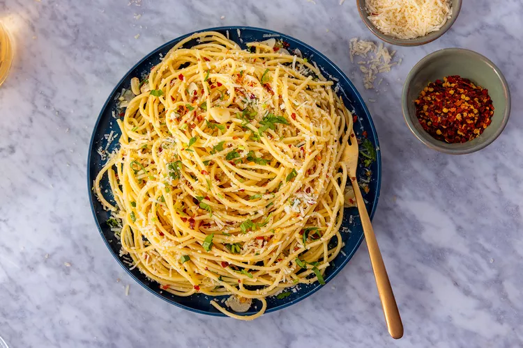

Simple Spahetti with Garlic and Olive Oil (Aglio E Olio)

Description
Aglio e Olio translate to garlic and oil, and is a simple sauce usually served with pasta like spaghetti.
This is a traditional Neopolitan pasta that is popular for being inexpensive and using pantry ingredients.
This recipe comes from the movie Chef, where Casper makes a lusciously oily, garlicky pasta for Molly.
Ingredients
- 1 pound dried spaghetti
- 3/4 cup extra virgin olive oil
- 12 large garlic cloves, cut into thin slivers
- 2 teaspoons crushed red pepper flakes
- Kosher salt and black better
- 1/2 cup grated parmesan cheese
- 1/3 cup fresh parsley, finely chopped
Directions
- Heat pot of salted water to rolling boil. Cook spaghetti until al dente (8 - 10 minutes).
- Meanwhile, in a large pan heat olive oil. Add garlic and chilli and cook gently for a few minutes. Stir in chopped parsley.
- Drain spaghetti, reserve 1/2 cup of pasta water.
- Add spaghetti to pan, stir well to coat with oil, add some pasta water. Cook on medium heat for 30 seconds, stirring a couple of times.
- Sprinkle chopped parsley and grated parmesan cheese.
Return to main page